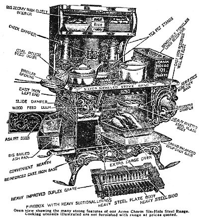

My husband, Theo-bless his practical heart-looked at me with his mouth wide open, trying for the umpteenth time in our years of marriage to understand the workings of my mind. Finally, he found his voice. "Billie, surely you aren't serious about wanting a wood cookstove. Have you any idea of what using one is like?" He shook his head.
"Yes, I think I do. In fact, I'm sure of it." Boy, that last crack closed off every avenue of escape. If I weren't sure, I'd better get that way.
Theo went on. "Why, you'll probably break your foot the first day kicking the blamed thing when it doesn't do to suit you." He threw back his head and laughed. Theo had grown up with a wood-burning cookstove and claimed to know all their quirks.
His arguments were sound enough but I had a few of my own: "I know a wood-burning range would be sheer purgatory for many, but I think it will be therapeutic for my impatient nature. Also, think of the money we'll save on the electric bill and it's a great way to get rid of all that scrub timber growing everywhere . . . and, besides, I WANT IT."
A smile played at the corners of Theo's mouth. How well he knew me. "Alright. We'll buy you a woodburning cookstove but, once it's bought, there'll be no turning back. Okay?"
Okay! I swallowed hard because I knew I had some research work cut out for me before my stove arrived.
I guess you could say I'm semi-old-fashioned. 1 like sturdy iron bedsteads, big-legged tables, well-sunned mattresses, skirts to the knees, a fresh-scrubbed look and cakes made from the flour up. I enjoy watching hens scratching in the yard for their biddies and-occasionally-I like to scrub my floors with a bucket of lye water and a worn-out broom.
The latter could be a carryover from childhood, since I always associate lye-scrubbed floors and sunned mattresses with my growing-up period. The finishing touch on spring cleaning days was to place a large, fragrant bouquet of wild Sweet Williams in the center of an oil cloth-covered table. I can smell them now!
Because I am fond of so many things and traditions of yesterday, the idea of a wood-burning cookstove had sort of eased into my mind over the years even though I knew absolutely nothing about using one . . . and-suddenly-my stove was here!
Theo put the cookstove up with its long, glossy black pipe leading into the new brick chimney. Our little issues ran about gathering kindling and bits of wood for the first blaze in mama's new stove that was just like the one Martha Washington had used to cook meals for George.
Theo built a fire and I transferred supper from the electric range to the wood burner. Then, as the new stove got hot, smoke began seeping out of every nook and cranny and rose in sheets off its top. The thick haze filled the kitchen and quickly forced us-coughing and sputtering-to open every available window and door (in January, yet). The condition was temporary, however, and only lasted a few minutes until the "new" wore off. We soon had the house buttoned up again and I eagerly looked forward to fathoming the mysteries of the wood-burning cookstove.
Since I grew up without the privilege of brothers and the knowledge bestowed on very young ladies by that fine organization known as The Girl Scouts, I knew absolutely zero about starting a fire. I had halfheartedly watched my husband and sons build a blaze in our fireplace . . . but never with the interest needed to really learn how and the first time I faced the ordeal of firing up my new stove unassisted, I nearly panicked.
On that wretched day I burned three Sunday editions of the paper and a whole log of rich pine and-an hour later-all I had to show was a lot of filmy ashes floating about, a streak of soot across my face and a stove that was still as cold as a wedge (in this case, a wedge of ice).
It was thus that Theo found me when he came home weary from the field for his supper. In my romantic imagination, I had planned to quote from Oliver Goldsmith's The Traveller, this beautiful little verse:
At night returning, every labour sped
He sits him down the monarch of a shed
Smiles by his cheerful fire, and round surveys
His children's looks, that brighten at the blaze;
While his lov'd partner, boastful of her hoard,
Displays her cleanly platter on the board.
Well, the only part that now applied was the cleanly platter. It was clean indeed and there was no fire, cheerful or otherwise. I suppose the one thing which saved his lov'd partner from rebuke was the wretched look on her soot-streaked face. Theo's only comment, in a very sober voice, was: "Is there any kindling left?"
With those not-kind-but-not-scolding words, I fled to the wood shed and scraped up a few chips. In no time at all, Theo had a cheerful fire spittin' and poppin'. It just made me sick.
After what seemed an eternity, I finally got the hang of it. Now, I only need a tiny bit of kindling or dry blocks and a sheet of newspaper to start a roaring blaze. Here's how I do it:
It's all-important that you don't let your stove's ash container get too full. This is because the ash box is usually so close to the fire box that, full, it can cut off the oxygen needed to make a fire "draw". I empty the ashes from my stove about twice a week. Since hot ashes always contain sparks that can ignite in the slightest wind, this job should be done in the morning, before a fire is built.
Next, I open the damper all the way so the air will draw and I lay my fire by taking one single sheet of newspaper (dry leaves, pine needles or tar paper will do if no newspaper is available), wadding it loosely and placing the wad in the front of the firebox. On top of this I crisscross some splinters. Then, on top of' it all I place a few sticks of dry wood and "light her up". In no time at all she's ready for the coffee pot and kettle.
The damper, by the way, regulates the blaze (and, therefore, the heat) by controlling the flow of air (oxygen) through the fire box. You want the damper wide open when starting afire. Once it's burning nicely close the damper a bit to hold the heat in the stove or to slow down the blaze.
One afternoon, I was busy and called to my teenage daughter, Bonnie, to turn the chicken for me. She yelled, "How you turn this darn thing off?" We had a good laugh (one of many) before I introduced her to the indispensable damper. I explained there was no ON or OFF per se, only an UP and DOWN, which is controlled with the damper. When you need OFF, you simply remove the pot; when you want to hold the heat DOWN, you turn the damper or push the pot to the side of the stove away from the heat. Simple! Bonnie grinned and shook her pretty head.
I never use kerosene or gasoline as a quick starter. They are highly dangerous and they really don't help. If the wood is dry enough to burn at all, it will start with a little encouragement from newspaper, pin: needles or dry leaves. If it's not dry enough, kerosene or gas won't help. Once the fluid burns itself out you're right back where you started. I do keep a little hatchet handy, though, to tailor-made splinters when they're brought in too big.
To each his own about flee kind of wood to burn in a cookstove. You'll probably want to experiment until you find your favorite In my opinion, ash makes the hottest fire and hickory is best for steady heat. Now that we live most of the year where cedar is plentiful, I cook quite a lot with it and enjoy the added benefit of a nice aroma.
If you live where you can't afford to be choicey, don't fret: Any wood will give a good, substantial fire once you get it going. And, if you have no wood at all, most of the old-time cookstoves will cheerfully accept hard coal, soft coal, coke or even corncobs.
While we're on the subject of wood, I should mention-for those who don't know (and I was among them until two years ago)-the difference between green and dry wood. Well do I remember the first time I sent our youngest daughter out to bring me a turn of green wood. She came back empty-handed and said sadly, "There is no green wood . . . only brown and sort of blackish."
Green wood is wood that hasn't been cut too long. It's full of moisture and quite heavy. Dry wood has been cut long enough to dry out. It's quite light and burns rapidly.
A good formula to follow is: For quick heat, use tinder dry; for standard baking, use year old wood (dry); and for a slow, steady, long-holding fire, use nearly green wood.
Green wood is usually added after the fire is really going good. You'll soon learn to mix green and dry wood too. This gives a "just right" fire for most any kind of cooking except deep fat frying which takes a blaze "hot as hell". For this, you need all dry wood and the damper tightly closed.
One of the most difficult things I had to learn-or rather, not forget-was to keep the fire box full of wood while cooking a meal. I would be cooking away and-suddenly-my french fries were just "sitting there" before I realized that I hadn't fed the fire recently. This, of course, is a must so you have to make like a railroad man and keep "firing that ole boiler".
I get up in the mornings an hour before I am ready to cook. This gives the fire a chance to "do its thing" and gives me some quiet time before our little ones are rip and about. When the fire is ready, I have everything prepared to cook.
If one lives on a tiny place or has no scrub timber to use for firewood, there are solutions. Almost any farmer or landowner will allow you to cut scrub timber from his place, clearing the way for more pasture and tillable land. The only requisite is that you pile the brush neatly or take it with you. This, too, can be used for firewood if broken or chopped and piled.
If you live in the vicinity of a sawmill or lumber yard of some sort, there are always. discarded strips and shavings that will burn. In Louisiana, when we don't want to go "pine knot huntin"' we visit a nearby box factory where scrap lumber has been piled many feet high. This scrap burns great.
As I walk in the woods of Louisiana and the Ozarks I see what amounts to literally truck loads of rotten, dry limbs and felled trees. In Europe, this would be a goldmine since many a serious livelihood is earned by gathering such wood and peddling it to townspeople for fuel.
There's no need to invest in a noisy chain saw for your wood-hunting expeditions. If you want something more traditional, less expensive and quieter, try a crosscut. You know . . . the long, two-man saw that you pull back and forth until the tree is felled. I've been on one end of such a saw and it's a splendid body conditioner. If you can't afford a saw you might do as Thoreau did: Borrow one. Just be sure you return it sharper than you found it . . . again, as Thoreau did.
The cleaning of a wood-burning stove involves very little effort. If you spill grease or food on it, the spill burns right off. I keep a bundle of newspapers handy and after each meal, I wipe my cookstove vigorously with a wadded sheet. Then, once every two weeks or so, I "black" the stove.
Blacking consists of dipping a limber paint brush (39 cents) into the stove polish or blacking (49 cents a bottle and enough for three applications) and painting it on. The process gives a newness to the stove and makes it look pretty . . . also keeps it from rusting, I understand.
I then wipe the white part of the cookstove until it's shiny clean with my dish towel. Now and then I also wipe out the oven with a damp towel and scrape away any spills.
Once or twice a year I take all the burners off the top and clean out the soot and ashes that have blown between the oven and the burners. This collection doesn't interfere with the stove's performance but cleaning it out makes me feel as good as when I move the refrigerator to sweep and mop away a year's collection of dust.
I am no slave to housework, so I really enjoy the easy care of my wood-burning range.
One of my glutton-for-gloom friends said I'd change my mind about the cookstove after one good, hot summer. I gave this a lot of thought before we bought the range and frequently considered how our grandmothers-attired in their several long skirts, with cheeks ablazin' and hearts asingin'-worked diligently in all kinds of weather and prepared menus fit for any old king on an iron stove. I couldn't believe summer cooking would be such an ordeal.
And it isn't. At this writing I've just finished the second hot summer with my wood stove and I wouldn't go "back" to the modern method under any circumstances.
Although the question of summer cooking hadn't bothered me, I did have one concern about the stove: I didn't want it to be a traumatic experience for Bonnie since-even before the cookstove arrived-it had seemed to highly embarrass her. She had, in fact, detested even the thought of the range and hoped to the last minute I'd "come to my senses" and not bring that monstrosity into our pretty, sunny kitchen.
I think somewhere in her young, sensitive mind, she associated the wood-burning stove with deprivation . . . or maybe she didn't know how she would explain my actions to her peers.
Then, as if by a miracle, the boy she was dating came early one evening and watched as I fried chicken (we eat a lot of chicken). We chatted while he waited for Bonnie and-although he said not a word about the stove-he sure eyeballed it.
Later, Bonnie told me the boy had asked her if that was a wood cookstove her mother was using and when she sadly confessed that it was, he beamed. "Really? Gee, I hope you'll ask me to eat sometimes. The food's great cooked on one. My granny had a wood stove until last year."
Bonnie said the young fellow even mentioned that he thought her mother was "cool". I like that boy.
Henry Thoreau, God rest his soul, knew his stuff when he said, "Simplify, simplify". This-for at least nine months of each year-we have literally done. We now have two homes: One in the thick of the "rat race" in Louisiana where everyone's in a mad dash, racial tension is thick and trust for each other is a thing long gone. The other, a little four room "unmodern" house we rent for twenty bucks a month, is in the heart of the beautiful Ozark Mountains.
Here, in our second domicile, I wash our clothes on a rubboard outside next to nature; I carry our wood and water inside; we have no telephone, television nor neighbors for a mile in any direction. Daily, we walk a mile up the mountain and a mile back for our mail. The local people are slow to anger, slow to criticize and quick to help. The school at the foot of the mountains is unsophisticated and undemanding in every way.
We live in our retreat house nine months of the year. Then we're forced back to that "other way" to earn enough to live our simple and quiet life here in the hills.
We have only the barest furniture necessities and every item in our mountain house is "useful". To quote Thoreau again, "Most of the luxuries, and many of the so-called comforts of life are . . . positive hindrances." Amen!
We considered ourselves lucky as all get out when we found a beautifully cared for Home Comfort woodburning cookstove for our retreat. It is truly an antique, but sturdy as the mountains surrounding our house. The white on the stove still gleams except where pots have been scraped back and forth over the years.
I wouldn't take ten times the price we paid for the range nor 50 times that much for the friendship we made with its sellers, two lovely little ladies in their seventies who care tenderly for each other. They used the stove for 50 years before selling it.
This range is much bigger than the one I have in Louisiana and I could cook for a battalion of men on it. The food warmers on top are large enough to hold a full meal with the doors closed. The giant oven will cook six loaves of bread at once and the copper-lined water reservoir heats fifteen gallons so hot I have to cool it to do dishes.
Each time I stand cooking at this stove I think of all the fine old women who must have stood just as I, meditating as they stirred a bubbley pot. The date of manufacture is 1864, so probably a hoop skirt has been worn here too.
During the course of a meal's preparation, I bend and stoop and squat many times to fill the fire box or punch around to liven the coals. Needless to say, this is good for my matronly waistline.
Then, of course, there is that special treat of going to the wood shed, or wood pile here in the Ozarks. It gives me a chance to listen to the songs of a variety of birds and enjoy nature a bit while I load my arms with the aromatic cedar wood. It seems only natural for me at this time to thank my Creator for allowing me to be cast in the lot that I am.
Ah, the wood chopping . . . the inevitable wood chopping. When my strong-armed husband cuts the wood, he hauls it to the house in blocks to be split later. He and the boys do this chore for the most part but, sometimes, I enjoy taking a whack with the axe.
Most of the time I miss the block completely and stab the ground. When I am able to hit the block, the axe mostly bounces off the silly thing (and my sons double over with laughter). Once in a while I am able to strike a cruel blow and split a block. Then, of course, I am filled with incentive and wear myself down trying for a repeat performance. By the time I have a pitiful little pile of wood, I am hot as a pistol. One ole timer put it well: "My wood warms me while I'm cuttin' it and again when I burn it."
Though my accomplishments are not great on my wood choppin' days, I can eat like a horse and not worry about calories. In fact, I haven't thought much on dieting since being here in the mountains. There's no need. We work hard, we eat wholesome foods, we sleep nearly ten hours a night and the calories take care of themselves.
We are in bed before nine each evening unless we feel reckless, and then we stay up another thirty minutes to read a few more chapters. Six o'clock in the morning finds me searching for the light string in my little kitchen and preparing to lay my fire.
While looking for a wood range to buy, my Husband and I were browsing in a local hardware store here in the Ozarks and found a quaint little stovepipe oven. The first I had ever seen, but the salesman said they'd been around for as long as he could remember. He said they fit between the first and second joint of the stovepipe on a heater or range and the heat scurrying up the pipe gets the little oven hot enough to bake anything you like. It's plenty big for a loaf of bread, cakes or a hen, yet. Just perfect for the small family.
If a family didn't want to invest in a wood-burning range but found it necessary to buy a wood-burning heater for warmth, they could purchase one of these ducky little ovens and insert it in the stovepipe of their heater. They'd then be all set for cooking, heating and baking. The little ovens cost in the neighborhood of nine dollars. They are substantially built and, in my opinion, are well worth the price.
I wouldn't mind at all cooking on such an ensemble and I plan to buy one of these ovens and mount it on our heater's pipe. Then-if I should take the notion to bake a cake and the range isn't fired up-I can still bake. Sort of like killing two birds with one stove!
I can now look back two years and laugh at my anxieties about starting a fire in my wood-burning range. In fact, I find that-as I put more years behind me-I am able to laugh at most things I once thought were major catastrophies. And I did have my problems with that stove.
The first time I baked biscuits I burned them to ebony. Also the second and third time. But on the fourth try they came out golden brown. And I burned my hands and wrists every day until I finally got it through my blockhead that EVERYTHING on or near that stove was HOT! But surely-if somewhat slowly-I mastered the wood range.
There's one thing about my cookstoves-No, there are many things about them, but this one in particular-they simply won't be hurried. They take their own sweet time. No begging, wringing the hands or kicking their backsides will get them hot any faster. They force me to slow my quick-moving self to a snail's pace, which is good for me.
I am compelled to wait for the fire to get hot enough before I put the bacon in the skillet, or else it will just boil gently ( gag ). Then I'm compelled to wait for the fire to cool down enough to pop the biscuits into the rosey-red oven or I have burned-on-the-outside-and-gooey-on-the-inside (shudder) biscuits. I like to think of these "waits" as character-building.
I should explain here that, for me, there's a vast difference in doing a thing that can be aggravating at times, "by choice" rather than "by necessity". When I feel forced to accept a situation that irritates me, I can moan and complain louder than any soul for miles around. But when the thing or situation is my own choice, I feel pretty silly griping about it . . . in fact. I'd better not, if I know what's good for me.
To be even more honest, there are times when cooking on a wood-burning range can be pure hair shirt, UNLESS I channel my attitude into the right groove. Honestly though, these times are rare.
Once I learned to operate my wood stove I began to really enjoy its coziness. While I'm writing I can see to dinner and mind the fire box. It gives me a warm, everythings-fine-with-the-world feeling to fill the fire box with "just right" green wood for gently boiling a big pot of vegetable soup or turnip greens and a good ham bone.
Yes, I enjoy my wood-burning stove, but a word of caution to the would-be owners of one: If you're geared to live in a mad dash, stewing in your own juice AND you don't wish to change . . . you'd better not tinker around with a wood-burning cookstove. Chances are you'll flip your lid as well as the stove's.
But if you're able to slow your pace; you don't mind some of your friends clucking their tongues or lifting their eyebrows at your action; if you like a taste of yesterday, the wonderful smell of wood smoke, apples in your cheeks AND you have a jim-dandy supply of wood and fat pine kindlin' . . . you just might get the same pleasure from your wood stove that I have from mine. I hope so.
|
 |
|
|